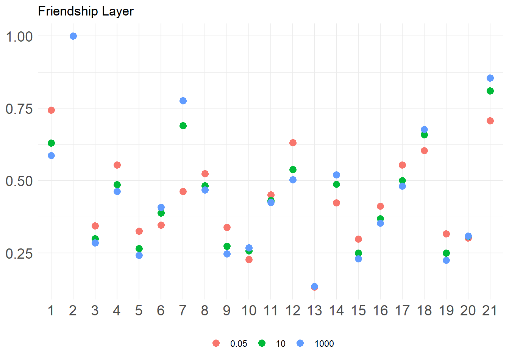
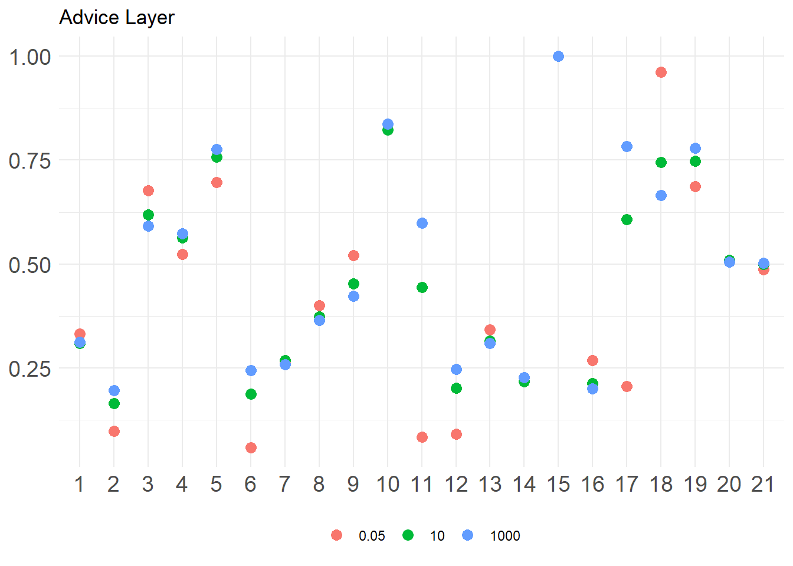

Prestige in Multilayer Networks
It is possible to extend the prestige and status we considered in earlier lessons (e.g., Bonacich Eigenvector, PageRank, HITS and others) to the case of multilayer networks.1
A “Supermatrix” Approach
How would this work? Here we follow the approach outlined by Taylor, Porter, and Mucha (2021). The basic idea is to create a “supermatrix” that simultaneously encodes the pairwise relations of each node in each layer and the dependency relations between the same nodes across layers (e.g., in a temporal network the same nodes are only connected in immediately adjacent layers; in multiplex networks they are connected across all layers).
The “supermatrix” \(\mathbf{S}\) is defined as follows:
\[ \mathbf{S} = \mathbf{C} + \alpha(\tilde{\mathbf{A}} \otimes \mathbf{I}) \tag{1}\]
Where \(\mathbf{C}\) is a block-diagonal matrix of dimensions \(NL \times NL\) (\(N\) being the number of nodes and \(L\) being the number of layers) with each block in the diagonal containing the relevant \(N \times N\) centrality matrix for the \(l^{th}\) layer, and \(\tilde{\mathbf{A}}\) is an \(L \times L\) matrix containing the dependencies between each layer, \(\mathbf{I}\) is the \(N \times N\) identity matrix (containing ones along the diagonals and zero in every other cell); finally, \(\alpha\) is a tunable parameter (\(0 \geq \alpha \leq \infty\)) specifying how much the interlayer dependencies matter in determining the prestige scores, the higher the parameter the more “strongly coupled” the layers are (e.g., scores in one layer affecting scores in the others).
The \(\otimes\) symbol in Equation 1 refers to the kroenbercker product between the \(\tilde{\mathbf{A}}\) and \(\mathbf{I}\) (e.g., the supermatrix in which each block is composed of \(\mathbf{I}\) matrix multiplied by the value each cell of \(\tilde{\mathbf{A}}\)).2
Krackhardt Managers Multilayer Network Example
Let’s see how this would work in real data. We first load the Krackchardt Manager’s data from the networkdata package. Recall that this data records three types of ties between 21 high-tech managers: Friendship, Advice, and who reports to whom. We store each in a separate adjacency matrix:
We then create the block diagonal matrix \(\mathbf{C}\), using the function bdiag from the package Matrix
Note that by using the transpose of the original adjacency matrices to create the diagonal blocks of the \(\mathbf{C}\) matrix, we are specifying that we want to compute the multilayer Eigenvector centrality.3
We now need to create the interlayer dependency matrix \(\tilde{\mathbf{A}}\). We use the simplest assumption, which is that all the layers mutually depend on one another equally, which means that \(\tilde{\mathbf{A}}\) is the all ones matrix with diagonals set to zero:
f a r
f 0 1 1
a 1 0 1
r 1 1 0Finally, we create \(\mathbf{I}\):
We are now ready to create the \(\mathbf{S}\) matrix with \(\alpha = 1.5\), using the base R function kronecker to compute the kronecker product between \(\tilde{\mathbf{A}}\) and \(\mathbf{I}\):
And now, all we need to do is run our old status distribution game on the \(\mathbf{S}\) matrix!
status1 <- function(w) {
x <- rep(1, nrow(w)) #initial status vector set to all ones of length equal to the number of nodes
d <- 1 #initial delta
while (d > 1e-10) {
o.x <- x #old status scores
x <- w %*% o.x #new scores a function of old scores and adjacency matrix
x <- x/norm(x, type = "E") #normalizing new status scores
d <- abs(sum(abs(x) - abs(o.x))) #delta between new and old scores
} #end while loop
return(as.vector(x))
}
ml.eig <- status1(S)The result will be a vector of length \(N \times L\) (in our case, \(21 \times 3 = 63\)) containing the prestige scores for each network layer.
We can arrange the long vector into an \(N \times L\) rectangular martrix:
ml.eig <- matrix(ml.eig, 21, 3)
rownames(ml.eig) <- 1:21
colnames(ml.eig) <- c("f", "a", "r")
round(ml.eig, 3) f a r
1 0.117 0.220 0.054
2 0.162 0.366 0.100
3 0.054 0.112 0.027
4 0.087 0.188 0.045
5 0.051 0.082 0.021
6 0.057 0.218 0.044
7 0.083 0.278 0.093
8 0.083 0.200 0.046
9 0.053 0.070 0.020
10 0.038 0.144 0.029
11 0.072 0.198 0.044
12 0.099 0.154 0.041
13 0.021 0.069 0.015
14 0.071 0.186 0.059
15 0.047 0.081 0.021
16 0.065 0.148 0.034
17 0.088 0.177 0.043
18 0.100 0.280 0.069
19 0.049 0.075 0.020
20 0.049 0.153 0.033
21 0.118 0.332 0.092Each column of the matrix is a network layer (friendship, advice, and reports to) and each row is an individual. The entries in the matrix is the (unnormalized) status score of individual \(i\) on layer \(l\).
To see who is the most important person in each layer, we can normalize by dividing by the column maximum:
f a r
1 0.719 0.600 0.545
2 1.000 1.000 1.000
3 0.334 0.305 0.269
4 0.538 0.515 0.447
5 0.313 0.224 0.215
6 0.351 0.595 0.445
7 0.515 0.761 0.932
8 0.513 0.548 0.460
9 0.324 0.192 0.199
10 0.232 0.395 0.295
11 0.445 0.543 0.439
12 0.611 0.421 0.410
13 0.132 0.189 0.147
14 0.437 0.510 0.586
15 0.288 0.222 0.208
16 0.401 0.404 0.345
17 0.542 0.483 0.429
18 0.616 0.766 0.695
19 0.302 0.204 0.200
20 0.302 0.418 0.327
21 0.728 0.909 0.919We can see that manager 2 is indeed the top person across all three layers.
We could also do the same thing to figure out which layer is the most important, but this time we sum the columns and normalize:
Which tell us that the advice layer is definitely the most important, and the “reports to” layer the least important in determining status across layers.
We can check out the sensitivity of our results to the strength of the dependency between layers:



Changing Interlayer Dependency Assumptions
As we noted before, the \(\tilde{\mathbf{A}}\) matrix contains our hypotheses about interlayer dependencies. Suppose we have a theory that says that advice depends on friendship (people go to friends for advice), but that friendship does not depend on advice. The theory also says that the “reports to” depends on neither friendship nor advice (being exogenously determined), but that who you report to affects who you seek for advice.
To encode these hypotheses into the status calculation we create a new matrix:
A <- matrix(0, 3, 3)
rownames(A) <- c("f", "a", "r")
colnames(A) <- c("f", "a", "r")
A["f", "a"] <- 1
A["r", "a"] <- 1
A f a r
f 0 1 0
a 0 0 0
r 0 1 0We now create a new \(\mathbf{S}\) matrix and compute the status scores:
S <- C + (1.5 * kronecker(A, I))
ml.eig <- status1(S)
ml.eig <- matrix(ml.eig, 21, 3)
rownames(ml.eig) <- 1:21
colnames(ml.eig) <- c("f", "a", "r")
round(apply(ml.eig, 2, function(x) {x/max(x)}), 3) f a r
1 0.744 0.594 0.476
2 1.000 1.000 0.948
3 0.344 0.306 0.245
4 0.555 0.517 0.414
5 0.326 0.219 0.175
6 0.347 0.620 0.497
7 0.461 0.767 1.000
8 0.525 0.555 0.444
9 0.339 0.182 0.146
10 0.228 0.410 0.328
11 0.452 0.556 0.445
12 0.632 0.405 0.325
13 0.132 0.197 0.158
14 0.423 0.512 0.580
15 0.298 0.220 0.177
16 0.412 0.406 0.325
17 0.554 0.482 0.386
18 0.604 0.780 0.718
19 0.317 0.197 0.158
20 0.303 0.432 0.346
21 0.707 0.920 0.937Note that this new set of assumptions about interlayer dependencies change our results. While node 2 is still the highest status in the friendship and advice layers, node 7 is now the highest status in the reports to layer.
S <- C + (1000 * kronecker(A, I))
ml.eig <- status1(S)
ml.eig <- matrix(ml.eig, 21, 3)
rownames(ml.eig) <- 1:21
colnames(ml.eig) <- c("f", "a", "r")
round(apply(ml.eig, 2, function(x) {x/max(x)}), 3) f a r
1 0.744 0.594 0.476
2 1.000 1.000 0.948
3 0.344 0.306 0.245
4 0.555 0.517 0.414
5 0.326 0.219 0.175
6 0.347 0.620 0.497
7 0.461 0.767 1.000
8 0.525 0.555 0.444
9 0.339 0.182 0.146
10 0.228 0.410 0.328
11 0.452 0.556 0.445
12 0.632 0.405 0.325
13 0.132 0.197 0.158
14 0.423 0.512 0.580
15 0.298 0.220 0.177
16 0.412 0.406 0.325
17 0.554 0.482 0.386
18 0.604 0.780 0.718
19 0.317 0.197 0.158
20 0.303 0.432 0.346
21 0.707 0.920 0.937References
Footnotes
Multilayer networks include multiplex networks, where multiple relations (e.g., friendship, advice, co-working) are measured over the same group of actors at one point in time, or temporal networks (which each relation being one of the layers), where the same relation (e.g., friendship) is measured over the same group of actors at multiple temporally ordered “snapshots” (which serve as the layers).↩︎
To compute the other prestige scores (e.g., PageRank or HITS) we would feed different matrices here (e.g., the row-normalized adjacency matrix or the common-neighbors matrix).↩︎